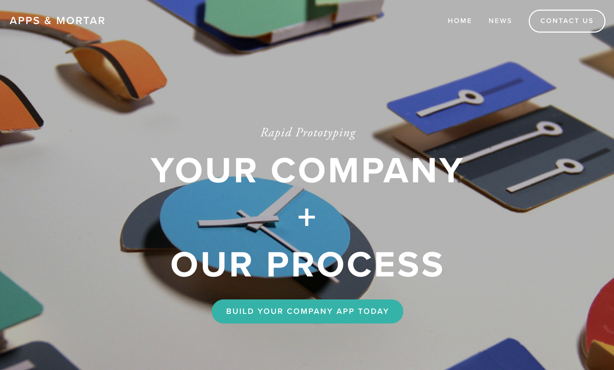

Work

I love research, problem solving, and creating great experiences for people. My values of learning and curiosity, collaboration, and meaningful connections (with others and the things and environments we interact with) have led me on my amazing journey to UX.
With a background in science and over 10 years of experience in customer service, I found UX Design and Research and knew this is where all my knowledge and skills could finally be combined.
I'm currently looking for opportunities where I can be part of a team that is working to improve peoples lives by creating simple and intuitive designs for the products they interact with all the time.
Being a new Bostonian I’m also always in search of good food, fun things to do in the city, and places to get outdoors. (And no, this previous Californian isn’t scared of snow; humidity is another story.)